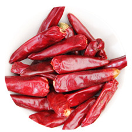

名称
「唐辛子」の漢字は、「唐から伝わった辛子」の意味であるが、歴史的に、この「唐」は漠然と「外国」を指す語とされる（実際の伝来経路については伝来史で）。同様に南蛮辛子（なんばんがらし）、それを略した南蛮という呼び方もある。唐辛子の総称として鷹の爪を使う者もいるが、正確には「鷹の爪」はトウガラシ種の1品種である。
用途
ビタミンAとビタミンCが豊富なことから、夏バテの防止に効果が高く、特に暑い地域で多く使われている。除虫の効果もあり、園芸では他の作物と共に植えて虫害を減らす目的で栽培されたり、食物の保存に利用される事もあるが、サルモネラ菌や大腸菌などの食中毒の原因菌を殺菌する作用は無く、食中毒を防ぐことは出来ない。